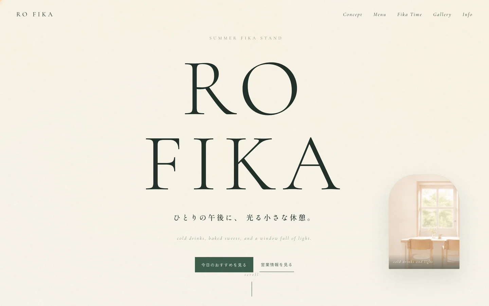
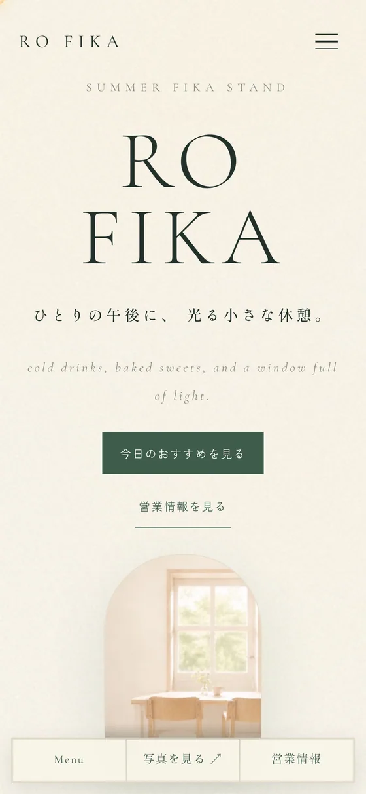

Work 04
RO FIKA
ひとりの午後に、光る小さな休憩。

課題
きれいなだけのカフェサイトになりかけた
最初の版は、光と余白と大きなロゴタイプで雰囲気は出ていました。ただ読み返すと、値段も席数も分からない。「きれいですね」で終わって、行く理由が生まれていませんでした。
設計
雰囲気を壊さずに、実用を足す
巨大なセリフ体のロゴタイプと窓辺の光はそのまま残し、Menuに価格帯を、フッターに営業時間・場所・席数・支払い方法・Instagramを整理して追加しました。Galleryにはあえて動きを付けず、写真の空気感と表示の安定を優先しています。
学んだこと
「おしゃれ」と「入れそう」は別の指標
この2つは同時に測らないと片方に寄ります。以後、雰囲気を作り込んだあとで必ず「で、行けるか?」を自分に聞くようにしました。

スマートフォンでは、Galleryを2列、Footer Infoを1列に落とし、横スクロールを出さずに情報量を保っています。